課程資訊與原始教材
| 課程 | 生成式AI應用電台 · 訂閱制 第三季 第一堂（S3E1）（與晨學講堂 EP 直播系列同講師、不同軌道） |
|---|---|
| 日期 | 2026/07/10（五）19:55 開始錄影，正課 20:00–23:05，錄影全長 3:12:01 |
| 講師 | 益師傅（楊俊益），智慧立方有限公司；Teams 直播，最高 93 人上線 |
| 本堂主軸 | ①多引擎台語 TTS 工具全解 ②圖像風格復刻工作流 ③HTML 反向工程與跨模型重建 ④資料清洗／Token 壓縮／SWOT 三工具 ⑤把 HTML 工具改造成 Codex 全域 Skill |
| 原始教材 | Drive「第一堂」資料夾：12 個單檔 HTML 工具、4 張風格圖（1霓虹／2手機／3版型／4程式）、sample.mdb、課程錄影 mp4 |
課程錄影（Google Drive 內嵌）
原始資料夾：20260710 課程資料（第一堂）
一頁看懂這堂課
七套工具不是七個孤島——它們排成一條「做工具 → 復刻 → 反向工程 → 重建驗證 → 壓縮省錢 → 技能化」的生產線。
本堂五條生產線。所有工具共同特徵：單檔 HTML、金鑰存 localStorage 不離開瀏覽器、Groq 免費模型當引擎、內建多金鑰輪替與模型降級。
本堂工具總表（原始教材 12 檔）
| 工具 | 一句話功能 | 引擎／模型 |
|---|---|---|
| TTS益值玩 (9) | 繁中→14 種語言×4 引擎語音，批次合成 ZIP＋SRT，一鍵字幕影片 MP4 | Groq（台語轉換）＋意傳／ElevenLabs／Gemini TTS／瀏覽器 TTS |
| 風格擷取師 R2 | 上傳一張圖→元素座標層級全盤點→風格紀錄 .md | Llama 4 Maverick（視覺，自動降級） |
| HTML 反向工程 R2 | 貼任意 HTML→自動拆解成完整創作提示詞（九章） | llama-3.3-70b，多金鑰輪換＋TPM 自動壓縮 |
| Groq解析 × Gemini 圖像生成器 | Groq 優化提示詞＋Gemini 生圖，13 種佈局模式×多風格 | Llama（解析）＋gemini-3.1-flash-lite-image |
| 數據清洗正規化分析 v6 | CSV/Excel/SQLite/Access 多表載入→AI 清洗建議→圖表→關聯偵測→進階分析 | llama-3.3-70b（可換 deepseek-r1、kimi-k2 等） |
| 意境壓縮器 v2（Token 瘦身引擎） | 用最少 token 表達相同意境：L1 結構化／L2 精煉／L3 電報體＋數字專名稽核 | llama-3.3-70b＋llama-4-scout（OCR）＋whisper-v3-turbo（音檔） |
| AI SWOT 分析工具 v3.7／v3.8 | 主題＋參考文件／商品網址→SWOT＋雷達圖＋競爭對手 PK＋情境模擬＋趨勢預測 | llama-3.3-70b（推薦） |
| PDF 拆分工具 v9／v10 | 上傳 PDF→AI 偵測章節→逐章切割下載／JPG 轉換／單頁摘要 | llama-3.3-70b＋llama-4-scout |
| Skills 配對器 Groq 版 v3 | 描述需求→從 213 個 Claude/Codex Skill 挑 5 個配對推薦＋安裝指引 | Groq＋Gemini 2.0 Flash |
| 八字姓名學 v3 | ECF 八字×姓名合參（示範「舊工具當復刻素材」） | Groq 多模型（含 qwen3-32b） |
| 1～4 風格圖 | 霓虹／手機／版型／程式四種風格範本，餵給 ChatGPT 專案與 Gemini Gem | — |
| sample.mdb | Access 範例資料庫（customers/orders/products 三表），數據清洗工具的教材 | — |
開場：一人工具廠的日常 [00:00–08:00]
正課前的暖場其實是這堂課最好的預告——講師把自己的工作目錄攤開給大家看。
- Codex 桌面版側欄躺著幾十個專案：程式解構運用、教學影片分析、環保稽查員、Gmail 信件檢查、台股智能分析、出題小幫手⋯⋯剛完成的「講師分析運用」還做成了全域 Codex Skill（instructor-analysis-ops），一次產出資策會講師分析 PPTX＋股市影片講師分析 PPTX。
- outputs 資料夾 118 項產出物：每個工具都配套「操作手冊 docx＋逐頁語音教學 mp3＋簡報輪播教學 mp4」——工具做完，教材也是 AI 生的。
- 下載資料夾裡 TTS益值玩從 (1) 排到 (9)：一個工具九個版本，「每次跟 AI 多聊一輪，就多一版」。
- 開場播放自製字幕影片：颱風停班停課新聞旁白（「這次巴威是 25 年來暴風圈最大一次」）——正是 TTS益值玩「字幕影片」功能的成品。
💡 觀念：工具會迭代、教材會自動生、舊產出物會變成新課的素材。這不是天分，是把「跟 AI 對話」當成日常工作流。
TTS益值玩與台語生態系 [08:00–36:00]
本堂主角。從「為什麼台語 TTS 難」講到「怎麼跟 Claude 聊出一個多引擎語音實驗室」。
3.1 台語的家底：意傳科技（ithuan.tw）
- 台灣本土團隊，維護台語、Pangcah（阿美語）、Kaxabu（噶哈巫語）、客話等語言專案，出品「厝鳥仔講台語」App。
- 提供「標漢字音標」（分詞＋台羅標音）與「台灣媠聲」（語音合成）API——是 TTS益值玩台語聲音的來源。
- 限制：每 IP 每分鐘最多 3 句音檔——連按太快就沒聲音，工具內建「逐句合成＋節流」來配合。
- 加映：Node-RED 也接得起來——「台語語音節點案例」流程：inject 繁中→「繁中轉台語語音」節點（ithuan）→台語漢字輸出／存 MP3／Buffer／編輯器播放。除錯窗誠實標註「台語漢字為規則式草稿，正式用途請人工確認」。[15:20]
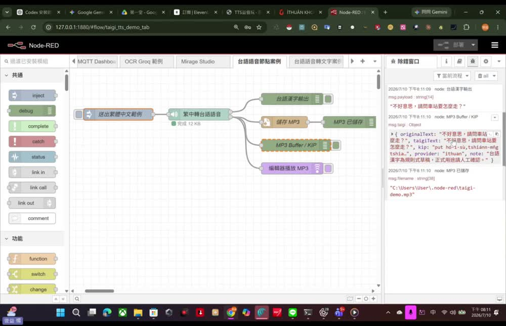
3.2 TTS益值玩 (9)：多引擎台語語音實驗室
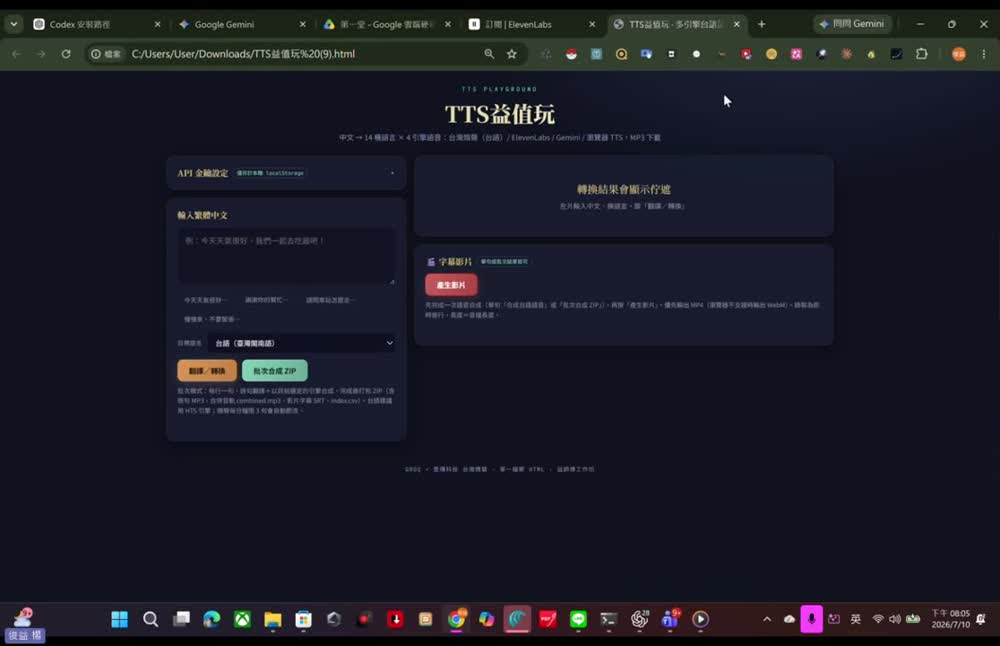
| 功能 | 內容 |
|---|---|
| 語言 | 14 種：台語（預設）、華語（原文直接發音，不經翻譯）、英日韓西法德義葡越泰印尼粵 |
| 四引擎 | 台灣媠聲（台語，免 API 金鑰）／ElevenLabs（填 Voice ID＋Key）／Gemini TTS／瀏覽器 TTS（免費，但無法輸出 MP3） |
| 台語輸出 | 台語漢字（教育部推薦用字）＋台羅拼音（可手動編修重新合成）＋用詞解說 |
| 批次合成 | 多句一次跑→ZIP（逐句 mp3＋combined.mp3＋SRT 字幕＋index.csv）；HTS 引擎每 3 句自動斷流配合意傳限制 |
| 字幕影片 | 單句或批次結果皆可→Canvas 渲染動態字幕影片，優先輸出 MP4——開場那支颱風新聞影片就是這裡出來的 |
核心流程圖：一句繁中到一顆台語 MP3 要過四站，每一站都有 7/9 對話裡真實踩過的坑與對策。
3.3 這個工具是怎麼「聊」出來的：7/9 vibe-coding 對話全重播 [18:40–22:00]
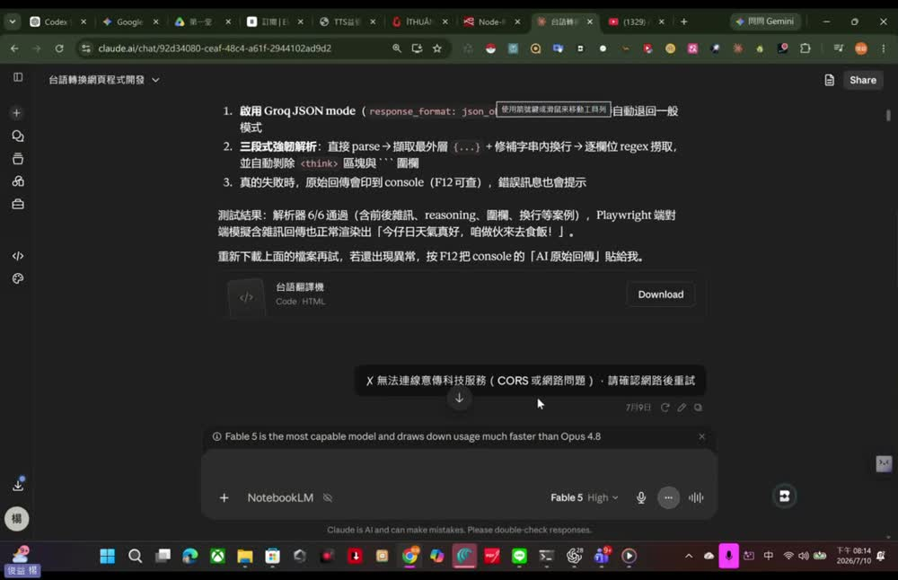
- 起手需求：「針對 YouTube 台語運用影片做獨立網頁，輸入繁中→轉台語→mp3 下載，資料整理透過 Groq API。」
- 管線設計：繁中→Groq 轉台語漢字＋台羅＋解說→意傳「標漢字音標」分詞標音→台灣媠聲合成→lamejs 前端轉 MP3（附 WAV 備援）。
- 抗 429 降級鏈：gpt-oss-120b→llama-3.3-70b→llama-4-scout→maverick→llama-3.1-8b，額度滿了自動換下一棒。
- 強韌解析：Groq JSON mode 失敗自動退一般模式；三段式解析（直接 parse→撈最外層 {} 修補換行→逐欄位 regex），自動剝
<think>與程式碼圍欄；解析器 6/6 測試通過＋Playwright 端對端驗證。 - 除錯實錄：音檔空白＝送錯格式伺服器回錯誤頁→加 magic bytes（fffb）與 Content-Type 驗證；發音不道地（「食飯」唸錯）→查官方作法改逐句分開合成＋台羅欄位開放手動編修。
- 道地性 prompt：加嚴格對應表＋鐵則「寧可改寫句構、不可保留華語詞」（咱一起去→咱做伙去）；意傳標音不可用而退回 Groq 推估時，畫面明確標「台羅為 AI 推估」。
- 大改版：台語降為 14 種語言之一→「選語言 × 選引擎」通用 TTS 平台；課前又加碼串 ElevenLabs（Voice ID）、Gemini TTS、瀏覽器 TTS。
🧭 為什麼要重播對話？因為工具本身會過時，但「需求怎麼講、卡關怎麼問、AI 的錯怎麼抓」這套過程才是可複製的。學員羅州課後回饋：自己也試過台語 TTS，「意傳好很多」。
ElevenLabs 與四引擎的選擇題 [08:40–33:00]
同一句話，四個引擎唸：品質、價格、限制一次講清楚。
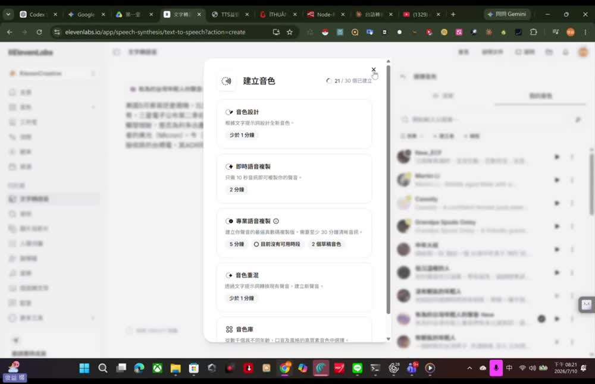
| 引擎 | 特色 | 成本／限制 |
|---|---|---|
| 台灣媠聲（意傳） | 真・台語，含台羅標音 | 免金鑰；每 IP 每分鐘 3 句 |
| ElevenLabs | 高擬真、可複製自己聲音、v3 增強 | Creator $22/月 30 萬點；API 計價 Flash/Turbo $0.05／Multilingual $0.1（每 1K 字元）、Scribe STT $0.22/hr |
| Gemini TTS | gemini-2.5-flash-preview-tts，雲端快、聲音自然 | Google AI Studio 金鑰；免費層有量限，可 Prepay 升 Tier 1 |
| 瀏覽器 TTS | Microsoft Hanhan 等內建語音，零成本即唸 | 無法輸出 MP3，只能現場播 |
- 講師示範把台股新聞稿貼進 ElevenLabs（172/5000 字元、v3 增強）生成語音；點數頁顯示已用 10,423／300,000。
- 金鑰管理習慣 [38:00]：Groq console 裡金鑰按用途命名（八字、風格擷取⋯⋯）、一工具一金鑰；Google AI Studio 同樣分（TTS、Voice App、出題小幫手、SWOT_Analysis）——金鑰洩漏時才知道是誰漏的、要停哪一把。畫面上正好出現「publicly exposed API key」警告當反面教材。
圖像風格復刻三件套 [38:40–65:20]
「風格」不再是感覺，是一份可以量化、可以重複使用的規格書。
5.1 風格擷取師 R2：把圖抄成規格書
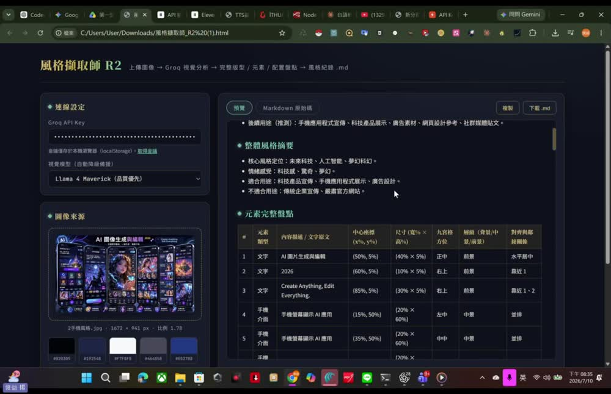
- 輸出四大塊：整體風格摘要（核心定位／情緒感受／適合與不適合用途）、元素完整盤點表 18 項（類別／內容／中心座標 x%,y%／尺寸／九宮格方位／層級／對齊鄰接）、版面配置座標圖（ASCII）、文字內容逐字抄錄（字體特徵／HEX 色／大小）。
- 可預覽／看 Markdown 原始碼／複製／下載 .md——這份 .md 就是「風格的原始碼」。
5.2 ChatGPT 專案 ＝ Gemini Gem：把風格變成常駐設定
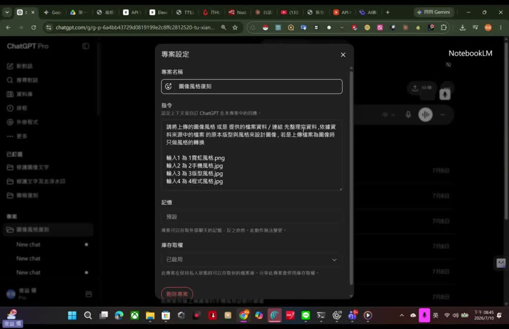
專案指令（講師原文，已貼到聊天室分享）：
請將上傳的圖像風格或提供的檔案資料/連結先整理完資料，
依據資料來源中的檔案的原本版型與風格來設計圖像，
若上傳檔案為圖像時只做風格的轉換。
輸入1為 1霓虹風格.png 輸入2為 2手機風格.jpg
輸入3為 3版型風格.jpg 輸入4為 4程式風格.jpg
- 實測一：附 TTS益值玩(9).html＋2手機風格_style_record.md→「創作圖像」→2 分 15 秒產出五手機並排霓虹宣傳圖，六大功能籤全對。[49:20]
- 實測二：附 八字姓名學_v3.html→4 分 4 秒產出「ECF 八字×姓名合參」紫金資訊圖。
- 實測三：附 Skill配對器_v3.html→六手機推廣海報。聊天室瞬間刷「需要」×8。
- 同一套搬去 Gemini [79:20]：建 Gem「圖像風格與版型復刻」，使用說明貼同段指令、相關資訊上傳同 4 張圖——ChatGPT 專案＝Gemini Gem，觀念一通兩邊都會。
- 收尾加映「心智圖復刻」：Google 圖搜心智圖範本存 png→「請將 PDF拆分工具-v9.html 重新整理為心智圖摘要結構，版型／風格／配色參考 png(19).png」→1 分 49 秒得到十枝幹心智圖。[155:20]
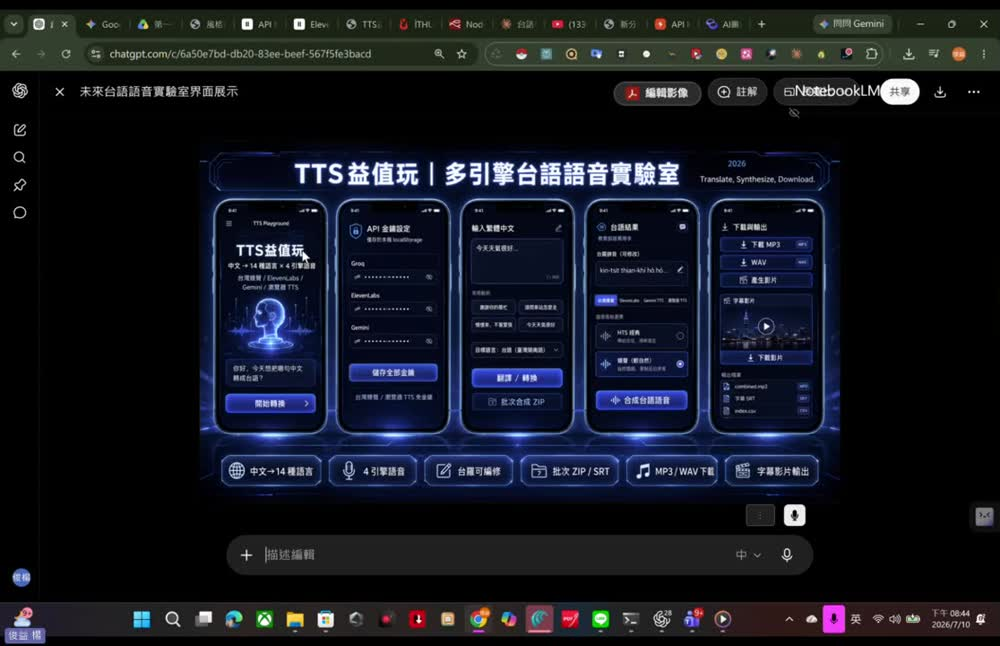
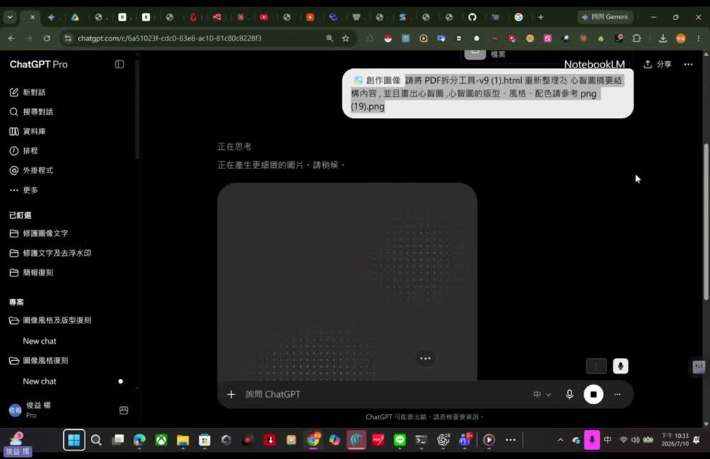
5.3 免費試玩場：LMArena 與 Groq×Gemini 圖像生成器
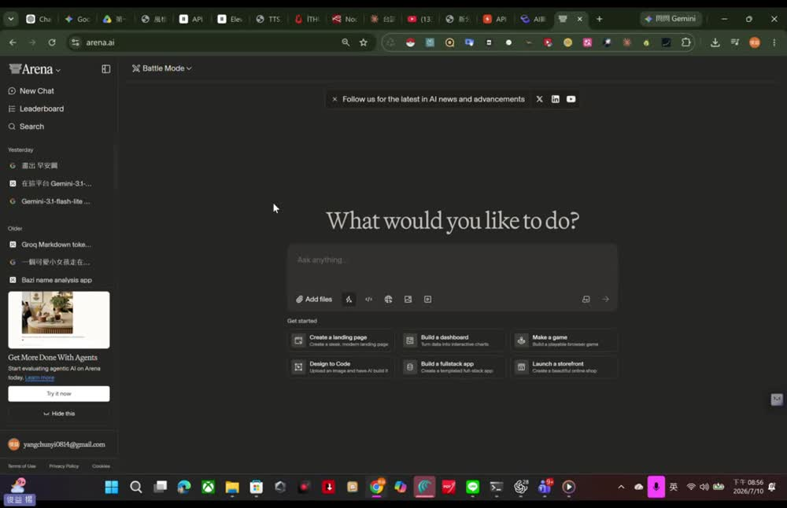
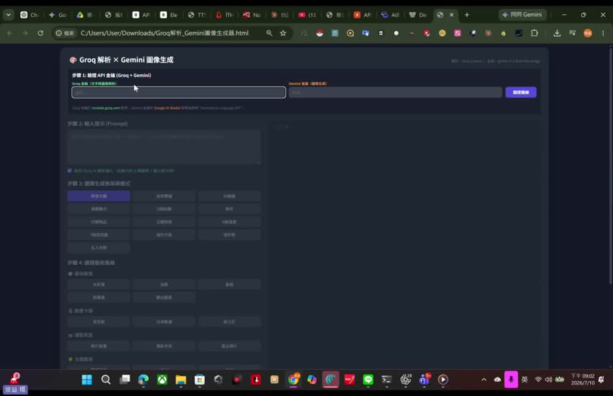
- 四步驟：驗證金鑰（Groq＋Gemini）→輸入提示（可 AI 優化）→選佈局模式（單張大圖／並排雙圖／四格／漸變融合／Q版貼圖／換衣／分解物品／立體剖面／6 幅漫畫／7 格資訊圖／城市天氣／證件照／名人合照）→選藝術風格（水彩、油畫、皮克斯、日本動漫、照片寫實⋯⋯）。
- 英文老師 Alanis 的現場應用問答：「我禮拜五要教中二國中生」「考卷要黑白，那下『黑白日漫風』嗎？」——講師：「懂。」風格詞彙＝生圖的控制語言。
HTML 反向工程 R2：程式拆回提示詞，再讓三家 AI 重建 [96:40–106:00]
下半場開場即核心觀念：提示詞才是資產。程式碼 99,667 tokens，拆回提示詞只要 1,629 字。
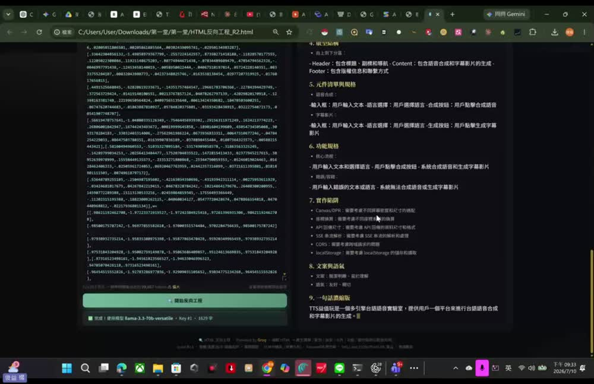
- 設定面：Groq Key 可多組（每行一把自動輪換）、模型 llama-3.3-70b、創意溫度 0.35、TPM 上限 6000（免費層 8b=6000/70b=12000）、自動壓縮以符合 TPM、附帶 One-Shot 範例（TPM 不足自動改精簡）。
- 四種模式：單檔反向／差異比對（v1→v2 改了什麼）／圖像反向／批次 ZIP。另可匯出 .puml（PlantUML 流程圖）。
- 提示詞九章：⋯4 版型結構（Header/Content/Footer）、5 元件清單與規格、6 功能規格（核心流程＋錯誤容錯）、7 實作陷阱（Canvas/DPR、座標換算、API 回傳尺寸、SSE 串流解析、CORS、localStorage）、8 文案與語氣、9 一句話濃縮版。
反向工程的價值鏈：程式碼壓成 1.6% 大小的提示詞，再讓任何模型重建回可用的工具。
重建驗證：同一份提示詞，三家各蓋一棟
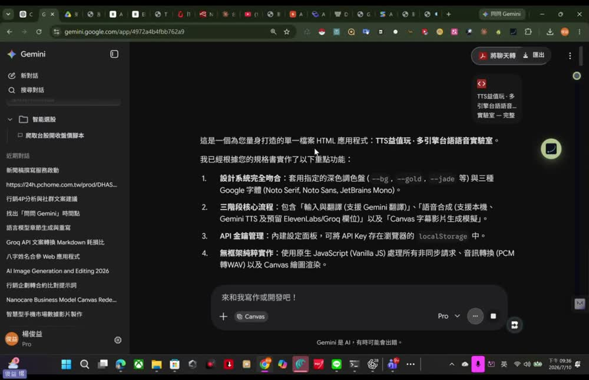
- Gemini Canvas：重建版含台語翻譯＋Gemini TTS（Aoede）＋預留 ElevenLabs 欄位＋Canvas 字幕影片模擬。
- LMArena（Max 模型）：「I'll create this TTS Playground…」→產出 taiwanese-voice-lab：四引擎籤（台灣媠聲 FREE／ElevenLabs／Groq Orpheus／Gemini TTS）＋操作記錄。
- claude.ai（Fable 5）：附上提示詞後 Claude 反問四選項——直接生成／先強化再生成／只強化提示詞／評估缺漏——示範「提示詞本身也能再進廠保養」。
🎯 這一段在教什麼：①別人的好網頁→圖像反向→提示詞；②自己的舊程式→單檔反向→提示詞庫；③大改版前先跑差異比對。提示詞在手，換哪家模型都能把工具重建回來——這就是「不被平台綁架」的保險。
資料雙工具：數據清洗 v6 × 意境壓縮器 v2 [106:40–124:40]
7.1 數據清洗、正規化及分析 v6：Excel 老手的 AI 分析台
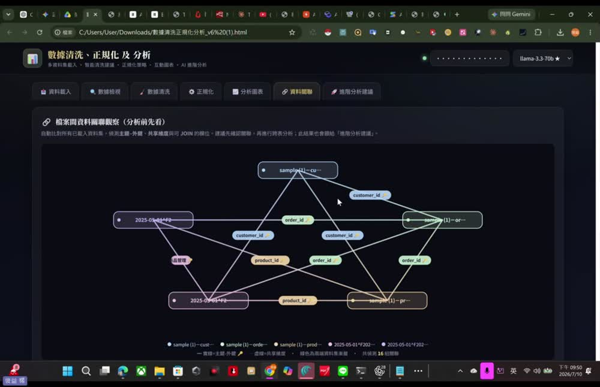
- 吃得下的格式：CSV／TSV／JSON／Excel（多工作表自動拆）／SQLite（.db）／SQL 傾印（含 MySQL dump）／Access（.mdb/.accdb），可多檔多資料集。
- 七個分頁＝一條分析流水線：資料載入→數據檢視→數據清洗→正規化→分析圖表→資料關聯→進階分析建議。
- AI 清洗建議：依欄位剖析列「清洗優先清單」（每項含問題／建議做法／風險等級）＋自動可修復項。
- AI 正規化策略：數值欄位處理、類別欄位編碼（Label／One-Hot）、1NF/2NF/3NF 拆表建議、五步前處理流水線。
- 互動圖表：不知道選哪種？點「建議圖表」一鍵產生（占比→圓餅、排行→長條、分佈→直方）；實測餐廳資料「各名稱Σ銷售量排行」＋Pearson 相關矩陣＋自動洞察（強相關：點選率↔銷售量）。
- 進階分析建議：①關聯解讀（該怎麼 JOIN）②現在就能做的四種分析（各附演算法＋需要欄位＋能回答的商業問題）③建議補充的資料④後續步驟。
7.2 意境壓縮器 v2 · Token 瘦身引擎：省 70% 的長文預處理
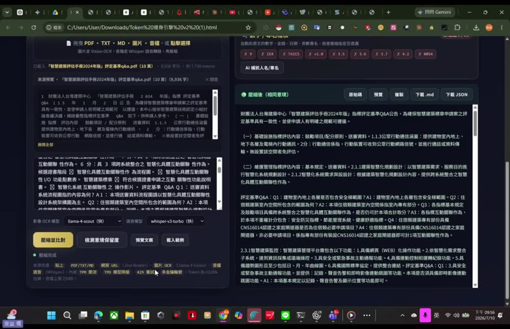
- 理念來自 microsoft/MarkItDown（GitHub 165k 星）：「用最精簡的標記保留結構，主流 LLM 原生看得懂」——把同樣思路推進到內容層。[122:40]
- 三檔壓縮強度：L1 結構化（MarkItDown 式 Markdown，保留全部資訊與語氣）／L2 精煉（刪贅字、合併重複、長句改短）／L3 電報體（符號縮寫極限壓縮，仍可還原意境）。
- 必留項目直接寫進壓縮指令：數字金額日期／專有名詞人名／語氣風格。
- 數字／專名稽核：自動抓原文的數字與英數專名逐一比對壓縮版，缺了直接亮紅籤（實測遺漏 9/33）＋「AI 補抓」一鍵補。
- 來源全吃：貼上／PDF/TXT/MD／網頁 URL（Jina Reader 抓文）／圖片 OCR（Llama-4 Vision）／音檔（Whisper v3 turbo 轉錄再壓縮，上限 25MB）；內建 TPM 節流、TPD 降級、429 重試、多金鑰輪替。
「壓縮到剩二、三十趴，你就省了七十趴，為什麼不用呢？」
— 益師傅談長文先壓縮再餵 AI 的成本觀念 [46:25 逐字稿]
AI SWOT 分析工具：貼個網址就能打商戰 [126:40–169:20]
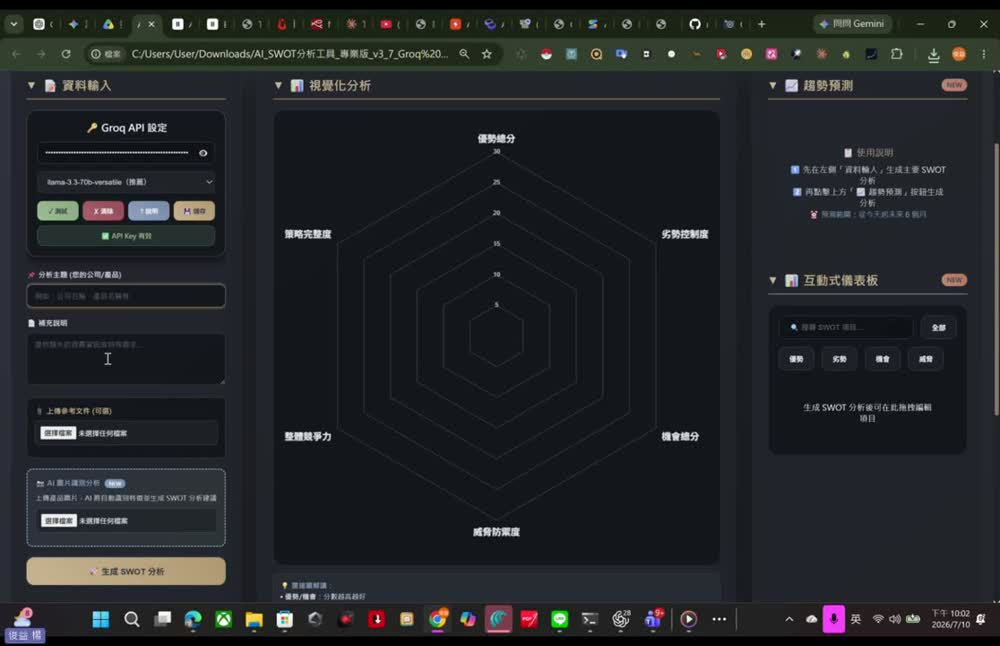
- 輸入很隨性：打主題、貼補充說明、上傳參考文件（示範：親子餐廳企劃書.pdf，自動整理出【參考文件內容】）、甚至上傳產品照片讓 AI 識別特徵生成 SWOT 建議。
- 實戰示範：主題「ASUS ROG Zephyrus G16」＋貼 PChome 商品頁網址→SWOT；再到「競爭對手」貼另一台 MSI Katana 15 的網址→雷達圖雙形疊圖對決、綜合評分 59.2/100、優劣勢卡附星等、情境模擬（最佳 0.3／最壞 0.2／最可能 0.5 各附行動）、趨勢預測時間軸（未來 6 個月）。[163:20]
- 故障也照播：分析失敗「Request too large for llama-3.1-8b-instant，TPM 限 6000、要求 25688」→現場解法：換 70b／減量／升級 Dev Tier；接著直接把整個 HTML 丟給 claude.ai 說「幫我修」——爆錯訊息連工具帶檔案一起給 AI，是最快的除錯法。[130:40]
- 學員 XIONG 問「股票可以做 SWOT PK 嗎？」→講師秀出自己的 taiwan-stock-analyzer v63（市場熱力圖／台股排行／ETF20／個人庫存分析）：可以，而且該用專門工具。[175:20]
壓軸：把 HTML 工具變成 Codex 全域 Skill [133:20–141:20]
整堂課的收束點：工具的下一站不是更多按鈕，而是「一句話」。
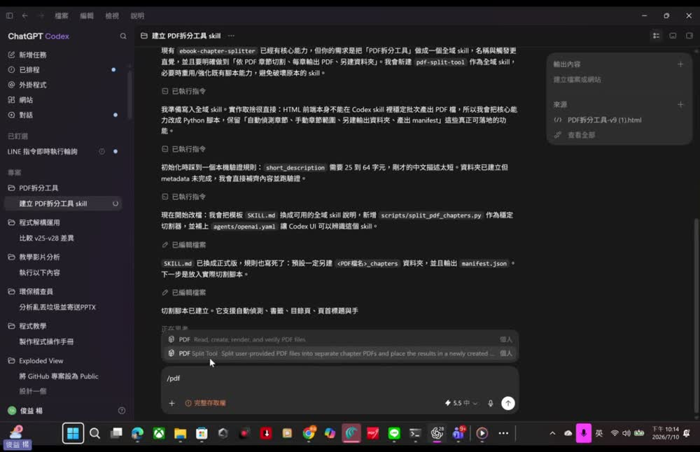
講師的完整 prompt（一字不改）：
請將上傳的程式 改為 PDF拆分工具.skill
可以根據提供的PDF檔 幫我做章節的切割並提供切割後的每個PDF檔給我，
切割後的PDF需要列外製作一個資料夾，這個skill 為全域
- 先查重：Codex 發現本機已有 ebook-chapter-splitter skill→「精準更新，不重複製造兩個功能相同的 skill」→決定另建觸發更直覺的 pdf-split-tool。
- 關鍵取捨：「HTML 前端本身不能在 Codex skill 裡穩定批次產出 PDF 檔」→把核心能力改寫成 Python 腳本，保留自動偵測章節／手動章節範圍／另建資料夾／產出 manifest。
- 踩坑實錄：short_description 要 25–64 字元（中文描述太短被驗證器打回）；Windows cp950 讀 UTF-8 中文解碼失敗→改 UTF-8 重跑；中文路徑干擾→改放系統暫存目錄。
- 輸出後驗證：切完逐一讀回 PDF 驗證頁數，「避免只『看起來有產生』」。
- 成果三檔：skills/pdf-split-tool/SKILL.md（+100）、agents/openai.yaml（+7）、scripts/split_pdf_chapters.py（+361）→重啟 Codex→輸入 /pdf 出現「PDF Split Tool」；用法：「使用 $pdf-split-tool，幫我把這份 PDF 依章節切割」。
- 開源收尾：整個 skill 推上 GitHub（yangchunyi0814/Split_PDF_Chapters），README 列五種切割模式（自動偵測／書籤／目錄頁／頁首標題／manual 人工章節表 chapters.json/CSV——書籤壞掉的 PDF 就靠它）。[180:00]
💬 聊天室的總結比誰都快——羅州：「而且程式不消耗 token」「skill >> 程式」；安裝別人的 skill 前？「可以請 AI 說明 repo 功能、跟檢查安全性」。
加映：Skill 配對器——213 個技能怎麼挑
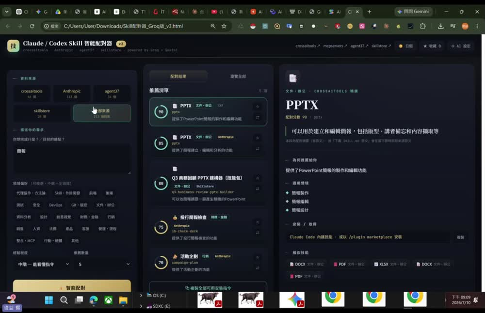
課後自我檢核
- 我能說出 TTS益值玩的四個語音引擎，以及各自「免費／要金鑰／能不能輸出 MP3」的差別嗎？
- 我知道台語合成為什麼要「逐句」送（意傳每 IP 每分鐘 3 句），以及「寧可改寫句構、不可保留華語詞」在解決什麼問題嗎？
- 我會用風格擷取師產出 style_record.md，並把它連同一個 HTML 丟進 ChatGPT 專案生成宣傳圖嗎？
- 我能在 Gemini 建一個跟 ChatGPT 專案等價的 Gem（同指令＋同資料來源）嗎？
- 我理解「反向工程→提示詞→跨模型重建」為什麼是工具的保險嗎？拿一個自己的 HTML 實際拆一次。
- 我會用意境壓縮器把一份 10 頁 PDF 壓到三成 token，並用「數字／專名稽核」確認沒漏關鍵數字嗎？
- 我能貼兩個商品網址，用 SWOT 工具跑出一張雷達對決圖嗎？遇到 TPM 爆掉知道三條路（換模型／減量／升級）嗎？
- 我能把一個自己的 HTML 工具丟給 Codex，講一句話讓它變成全域 skill，並在安裝前請 AI 檢查安全性嗎？
金句與課堂 QA
「skill ＞＞ 程式。而且程式不消耗 token。」
— 學員羅州在壓軸段的聊天室總結：同樣功能，技能化之後呼叫更簡單、又不用每次重生程式碼
「寧可改寫句構、不可保留華語詞。」
— 台語道地性的 prompt 鐵則：「咱一起去」要變「咱做伙去」，翻譯不是換字是換句
「壓縮可以壓到剩二、三十趴——你省了七十趴，為什麼不用？」
— 長文先過意境壓縮器再餵 AI 的成本學
「無菜單，但都是最新的技術!!」
— 學員張賺基形容這堂課：沒有固定菜單的私廚料理
| 課堂 QA | 答案 |
|---|---|
| 英文老師：考卷要黑白，生圖下「黑白日漫風」嗎？ | 可以，風格詞彙就是控制語言；把「黑白、線稿、日漫」寫進提示詞即可 |
| 圖片可以復刻，影像（影片）可以復刻嗎？ | 概念相同：先拆規格再重建；影片工作流本季後續課程會展開 |
| 股票可以做 SWOT PK 嗎？ | 可以，但更推薦專門工具（講師示範 taiwan-stock-analyzer v63：熱力圖／排行／ETF20／庫存分析） |
| 裝別人的 skill 怕不安全？ | 「可以請 AI 說明 repo 功能、跟檢查安全性」——安裝前先讓 AI 審一輪 |
資料來源與整理說明
- 錄影逐幀：課程錄影 3:12:01，依密度分級（>150 分）每 40 秒抽 1 格、共 288 格，逐格人工閱讀記錄；文中時間戳 [mm:ss] 為錄影時間（19:55 開錄）。
- 逐字稿：faster-whisper（small/int8）全程轉寫，金句與講解口吻依逐字稿校對。
- 工具細節：直接讀取 Drive「第一堂」資料夾 12 個 HTML 原始檔交叉核對（功能清單、模型名、參數皆出自原始碼）。
- 截圖：全部為錄影實際畫面（已裁去與會者側欄）。
- 「系列課程脈絡補充」僅見於第 11 節影片復刻一問的答覆；其餘內容均對得到畫面、逐字稿或原始碼。
原始教材：Drive「第一堂」資料夾 · 開源成果：Split_PDF_Chapters · 相關網站：意傳科技、LMArena、MarkItDown